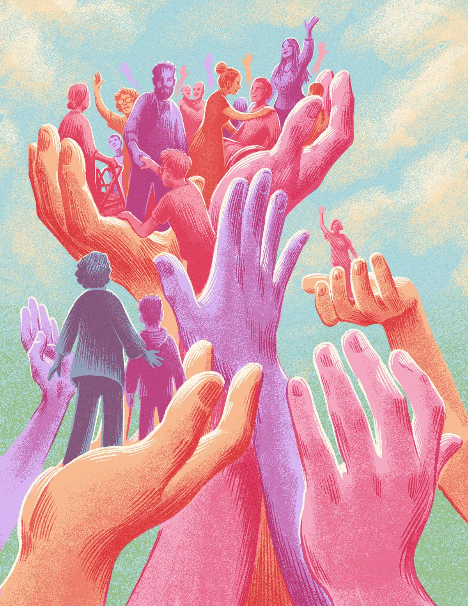

Presentación
Deseamos brindar soporte a las unidades de emergencia preexistentes.
Agilizamos procesos de donaciones y atención ante desastres
GOTCHA es una plataforma web que busca agilizar procesos de donaciones para personas o refugios afectados por desastres naturales. El objetivo es brindar una respuesta más rápida ante llamadas de ayuda.
Como comunidad comprendemos que es dificil llegar acada rincon en una situación como esta, por lo que proveemos un servicio para solicitar recursos o bien número de contacto para situaciones de suma emergencia. Así como capacitaciones relacionadas al tema.

Sistema de donaciones
GOTCHA cuenta tambíen con su propio sistema riguroso de donaciones. Todos los recursos son protegidos desde el momento que se adquieren hasta su entrega.
El uso de cada material es registrado. No toleramos ningún tipo de deshonestidad sobre la manipulación de los mismos.